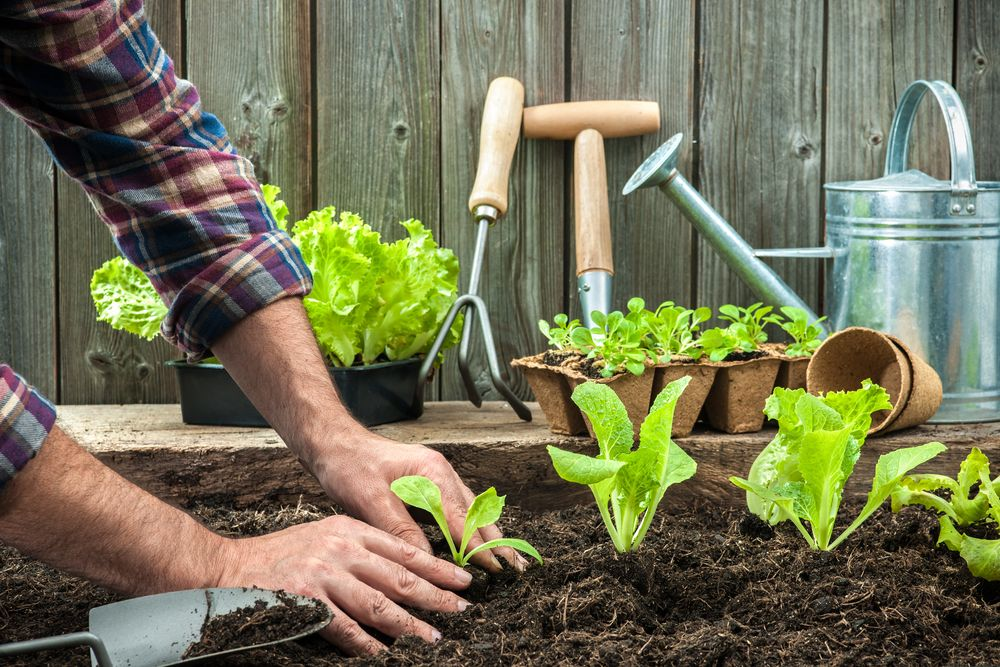

{% if current_user.is_anonymous %}
{% else %}
{% endif %}
Brotinho

O Brotinho nasceu da paixão por plantas e da vontade de facilitar a rotina de quem ama cultivar. Sabemos que cuidar de plantas vai além de regar de vez em quando — envolve atenção, paciência, dedicação e muito carinho. Pensando nisso, criamos um espaço onde você pode registrar cada uma de suas plantinhas, manter o controle das tarefas diárias, semanais ou mensais e garantir que nenhuma etapa do cuidado fique para trás.
Com o Brotinho, você pode adicionar lembretes personalizados, com data, hora, frequência e status para acompanhar facilmente o que já foi feito e o que ainda precisa de atenção. Tudo isso em um ambiente simples, prático e feito para tornar o seu dia a dia mais verde e organizado.
Mais do que uma ferramenta de organização, queremos criar uma comunidade de amantes da jardinagem. Acreditamos que o cuidado com as plantas também é uma forma de autocuidado, de se reconectar com a natureza e de compartilhar experiências com outras pessoas que compartilham essa mesma paixão. Aqui no Brotinho, cada plantinha tem seu espaço especial e você tem o apoio que precisa para cultivar com mais tranquilidade e prazer. Vem crescer com a gente!

Acreditamos que cultivar vai além do cuidado com as nossas próprias plantas — é também sobre compartilhar, aprender e trocar. Por isso, o Brotinho conta com uma área exclusiva chamada Trocas, pensada para facilitar a conexão entre os membros da nossa comunidade. Na área de Trocas, você pode anunciar ou buscar sementes, mudas, adubos, ferramentas de jardinagem, vasos, livros e qualquer outro item relacionado ao mundo verde. É um espaço onde você pode dar uma nova chance para o que tem sobrando em casa e encontrar o que precisa para continuar cultivando com alegria e consciência. Além de ajudar a reduzir o desperdício e incentivar o reaproveitamento, a área de Trocas é uma ótima oportunidade para conhecer outros apaixonados por plantas, trocar dicas, experiências e fortalecer essa rede de cuidado e amizade. Seja para encontrar aquela muda especial, trocar aquela semente rara ou simplesmente compartilhar o que você tem de sobra, o espaço é seu. Vamos juntos cultivar trocas cheias de vida, afeto e colaboração.